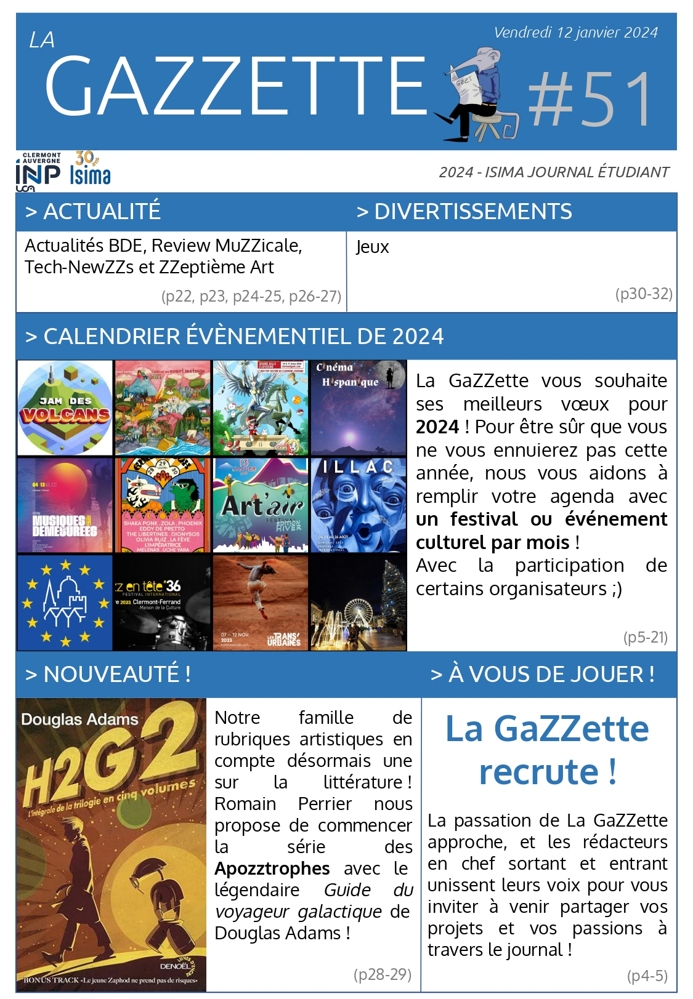

Unfortunately they are written in French , and I don't feel patient enough to translate all of them into English :')
You'll find my articles in the list below, each with a description and a button to download them. Otherwise, you can also check the full GaZZette issues here:
All my articles
-
Mois des fiertés
Le numéro 56 était le numéro de juin, donc celui qui sortait entre mes examens et mon immersion en laboratoire. Toutefois, si le manque de temps m'a fait zapper le ZZeptième Art, je tenais à écrire quelque chose pour le mois des fiertés ! Cet article commence par l'histoire du mois des fiertés. Ensuite, je présente la marche des fiertés de Clermont-Ferrand. Enfin, je partage une courte interview que j'ai pu obtenir avec un représentant de SOS Homophobie.
-
Birobidjan : L'Israël russe
Cette chronique n'a pas été écrite pour une GaZZette, mais pour TelluZZEon, le club d'histoire/géographie dont je fais partie (cf la présentation deux articles plus bas)
On essaie de faire de chaque mois un mois thématique sur un pays, et en l'occurrence, il s'agissait de la Russie. J'ai donc proposé un article pour parler de l'oblast autonome juif. Compte tenu de l'actualité, je reconnais avoir choisi un sujet dangereux sur le plan démagogique... -
ZZeptième Art : Elvis
L'idée de ce ZZeptième Art m'est venue quand je sortais du cinéma, m'étant influgé l'affligeant visionage de Back to black. J'avais des comptes à régler avec la flopée de biopics musicaux moyens qui sorent en ce moment. Toutefois, l'idée de ma rubrique étant de pouvoir recommander des films, je finis par présenter la superbe exception : Elvis.
-
Présentation de TelluZZEon
J'avais interviewé les nouveaux mandats de clubs dans le numéro 53, mais TelluZZEon, le club d'histoire/géographie, n'existait pas encore. Sa qualité de retardataire ne devait pas le priver de se présenter. Or, autre particularité parmi tant, je suis secrétaire et responsable du pôle géographie du club. Du coup, je me suis en quelques sortes auto-interviewé, un concept bien intéressant.
-
ZZeptième Art : Night is short, Walk on girl
Cette édition de ZZeptième Art fait hommage à une facette de moi qui n'est pas la plus glorieuse. En effet, je me trouve être ce qu'on appelle, dans le milieu, une énorme weebasse. Au point d'avoir rejoint Izziweeb (club de culture japonaise) comme responsable des projections. Je parle donc cette fois de Night is short, Walk on girl, un film d'animation japonaise, un de mes préférés :)
-
ZZeptième Art : Brazil
Ce numéro de La GaZZette parlait des passations des clubs à Isima. Au-dessus de tous les clubs, il y a le BDE. Or le BDE est élu parmi plusieurs listes, chacune se mettant aux couleurs d'un thème. Et le BDE nouvellement élu est issu de la liste "BraZZil". Comme il s'agit aussi d'un excellent film, j'ai décidé de parler de l'œuvre homonyme. Dans ce sixième numéro de ZZeptième Art, c'est Brazil !
-
L'HiZZtoire qui aura peut-être une fin
Dans ce numéro de La GaZZette, j'ai voulu commencer un projet collaboratif. L'idée serait d'écrire une histoire au fil des GaZZettes, qui serait poursuivie par une personne différente à chaque numéro. L'HiZZtoire qui aura peut-être une fin commence ici, et je suis l'auteur de ses premières pages.
-
ZZeptième Art : Le Théorème de Marguerite
Pour la première fois de l'histoire de ZZeptième Art, je parlais d'un film que j'avais pu voir au cinéma seulement quelques mois auparavant ! Un film qui m'avait beucoup parlé et énormément touché. Peut-être parce qu'il m'est arrivé d'avoir eu du mal avec les relations humaines. Peut-être parce que j'aime bien les maths. Peut-être parce que j'aimerais faire une thèse. Que de théories ! En tout cas, dans ce cinquième numéro de ZZeptième Art, c'est Le Théorème de Marguerite !
-

ZZeptième Art : Illusions Perdues
Ce numéro de la GaZZette étant mon premier en tant que rédacteur en chef, je voulais en profiter pour parler de journalisme ! En plus de ça, il comptait le premier numéro d'une rubrique parlant de littérature. Alliant l'un à l'autre, j'ai choisi un film adapté d'un roman de Balzac dont la protagoniste devient journaliste. Dans ce quatrième numéro de ZZeptième Art, c'est Illusions Perdues !
-
Calendrier Événémentiel de 2024
Pour notre premier numéro de l'année (mon numéro d'essai en rédacteur en chef !), nous avons fait un petit calendrier événementiel. L'idée, c'est que pour chaque mois de 2024, nous présentions un festival ou événement culturel qui allait avoir lieu à Clermont-Ferrand ou ses alentours. Dans ce cadre, j'ai aussi pu prendre contact avec les organisateurs de certains de ces festivals pour qu'ils en parlent eux-mêmes.
-

ZZeptième Art : Love Actually
Notre dernière GaZZette avant Noël, je ne pouvais pas l'ignorer ! Et dans la catégorie souvent médiocre des films de Noël, il y en a un qui mérite à mes yeux autant d'amour qu'il nous en procure. Dans ce numéro de ZZeptième Art, c'est Love Atually !
-

ZZeptième Art : 12 hommes en colère
Les listes pour la passation du BDE d'Isima étaient formées, et les campagnes faisaient rage. Observant le phénomène de l'intérieur, j'y vis une abondance de biais sociaux qui me rappela le chef-d'œuvre de Sidney Lumet. Dans ce deuxième numéro de ma petite chronique cinéma, c'était 12 hommes en colère !
-

ZZeptième Art : Office Space
En lançant cette chronique, j'ai l'ambition de parler de cinéma à des geeks. Toutefois, il est hors de question que je parle de Star Wars. Heureusement, j'ai mieux dans la catégorie Film culte des geeks : une comédie américaine comme ils n'en font plus. Dans ce premier numéro de ZZeptième Art, c'est Office Space de Mike Judge.
-
Elections de l'Université Clermont Auvergne
Cet article sort une semaine avant que les élections pour les représentants des étudiants au conseil d'adminstration de l'université aient lieu. Ce sont donc des élections très importantes, mais à laquelle le taux de participation est affreusement bas, les étudiants étant trop mal renseignés à son sujet. Dans cet article, je récapitule l'intérêt de ces élections à travers un organigramme simplifié et une interview.